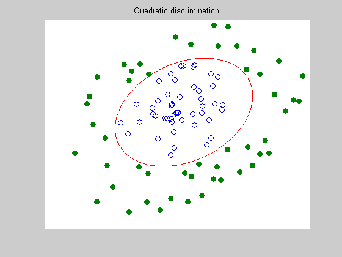

Quadratic discrimination (separating ellipsoid)
n = 2;
rand('state',0); randn('state',0);
N=50;
X = randn(2,N); X = X*diag(0.99*rand(1,N)./sqrt(sum(X.^2)));
Y = randn(2,N); Y = Y*diag((1.02+rand(1,N))./sqrt(sum(Y.^2)));
T = [1 -1; 2 1]; X = T*X; Y = T*Y;
fprintf(1,'Find the optimal ellipsoid that seperates the 2 classes...');
cvx_begin sdp
variable P(n,n) symmetric
variables q(n) r(1)
P <= -eye(n);
sum((X'*P).*X',2) + X'*q + r >= +1;
sum((Y'*P).*Y',2) + Y'*q + r <= -1;
cvx_end
fprintf(1,'Done! \n');
r = -r; P = -P; q = -q;
c = 0.25*q'*inv(P)*q - r;
xc = -0.5*inv(P)*q;
nopts = 1000;
angles = linspace(0,2*pi,nopts);
ell = inv(sqrtm(P/c))*[cos(angles); sin(angles)] + repmat(xc,1,nopts);
graph=plot(X(1,:),X(2,:),'o', Y(1,:), Y(2,:),'o', ell(1,:), ell(2,:),'-');
set(graph(2),'MarkerFaceColor',[0 0.5 0]);
set(gca,'XTick',[]); set(gca,'YTick',[]);
title('Quadratic discrimination');
Find the optimal ellipsoid that seperates the 2 classes...
Calling SDPT3: 103 variables, 6 equality constraints
For improved efficiency, SDPT3 is solving the dual problem.
------------------------------------------------------------
num. of constraints = 6
dim. of sdp var = 2, num. of sdp blk = 1
dim. of linear var = 100
*******************************************************************
SDPT3: Infeasible path-following algorithms
*******************************************************************
version predcorr gam expon scale_data
HKM 1 0.000 1 0
it pstep dstep pinfeas dinfeas gap mean(obj) cputime
-------------------------------------------------------------------
0|0.000|0.000|2.9e+03|5.3e+01|5.8e+04|-5.020000e+02| 0:0:00| chol 1 1
1|0.487|0.802|1.5e+03|1.1e+01|4.4e+04|-4.093936e+02| 0:0:00| chol 1 1
2|0.882|1.000|1.7e+02|9.1e-03|5.4e+03|-6.139945e+01| 0:0:00| chol 1 1
3|0.988|1.000|2.1e+00|9.1e-04|6.4e+01|-7.301393e-01| 0:0:00| chol 1 1
4|0.989|1.000|2.3e-02|9.1e-05|7.0e-01|-8.031379e-03| 0:0:00| chol 1 1
5|0.989|1.000|2.5e-04|4.6e-03|7.7e-03|-8.826915e-05| 0:0:00| chol 1 1
6|0.989|1.000|2.8e-06|5.1e-05|8.5e-05|-9.711865e-07| 0:0:00| chol 1 1
7|0.980|1.000|5.5e-08|5.5e-07|1.7e-06|-1.787065e-08| 0:0:00| chol 1 1
8|0.980|1.000|1.1e-09|1.1e-08|3.5e-08|-3.411518e-10| 0:0:00| chol 1 1
9|0.982|1.000|2.0e-11|2.2e-10|6.3e-10|-6.060533e-12| 0:0:00|
stop: max(relative gap, infeasibilities) < 1.49e-08
-------------------------------------------------------------------
number of iterations = 9
primal objective value = -1.21210666e-11
dual objective value = 0.00000000e+00
gap := trace(XZ) = 6.34e-10
relative gap = 6.34e-10
actual relative gap = -1.21e-11
rel. primal infeas = 1.98e-11
rel. dual infeas = 2.20e-10
norm(X), norm(y), norm(Z) = 1.9e-12, 1.2e+02, 1.1e+03
norm(A), norm(b), norm(C) = 7.8e+01, 1.0e+00, 1.1e+01
Total CPU time (secs) = 0.2
CPU time per iteration = 0.0
termination code = 0
DIMACS: 2.0e-11 0.0e+00 1.2e-09 0.0e+00 -1.2e-11 6.3e-10
-------------------------------------------------------------------
------------------------------------------------------------
Status: Solved
Optimal value (cvx_optval): +1.21211e-11
Done!
